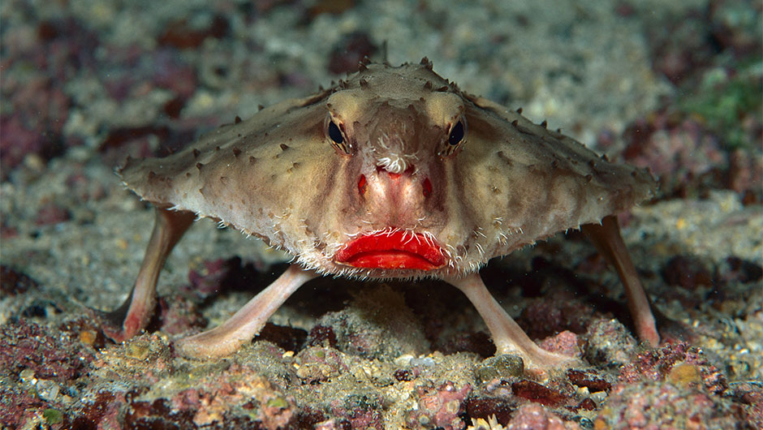
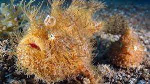
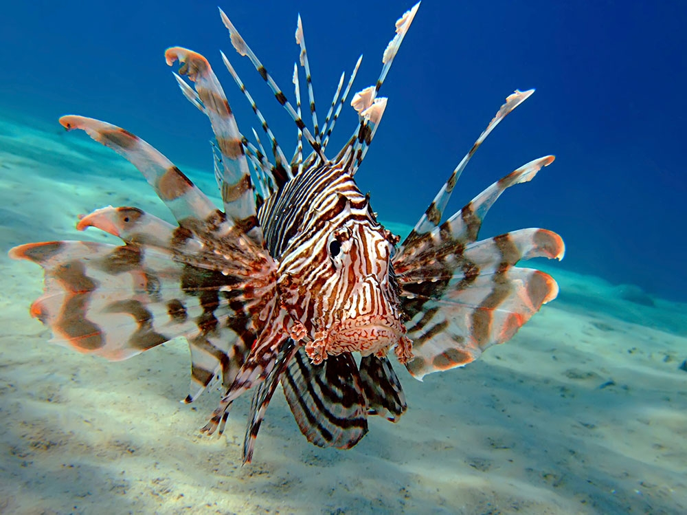

Fish Name: Bruce Wayne
Species: Red Lipped Batfish
Length: 10 Inches
Location Harvested: Gotham City
Food: Justice
Fish Name: Kroak
Species: Hairy Frogfish
Length: 20 inches
Location Harvested: Shrek's Swamp
Food: Everything, but mostly souls
Fish Name: Linus
Species: Lionfish
Length: 5 feet
Location Harvested: The bucket in the basement, next to the mop
Food:Antelope

It is better to have fished and lost than to have never fished at all.
Only harvest fish, never people
Gotham City
Shrek's Swamp
The bucket in the basement, next to the mop